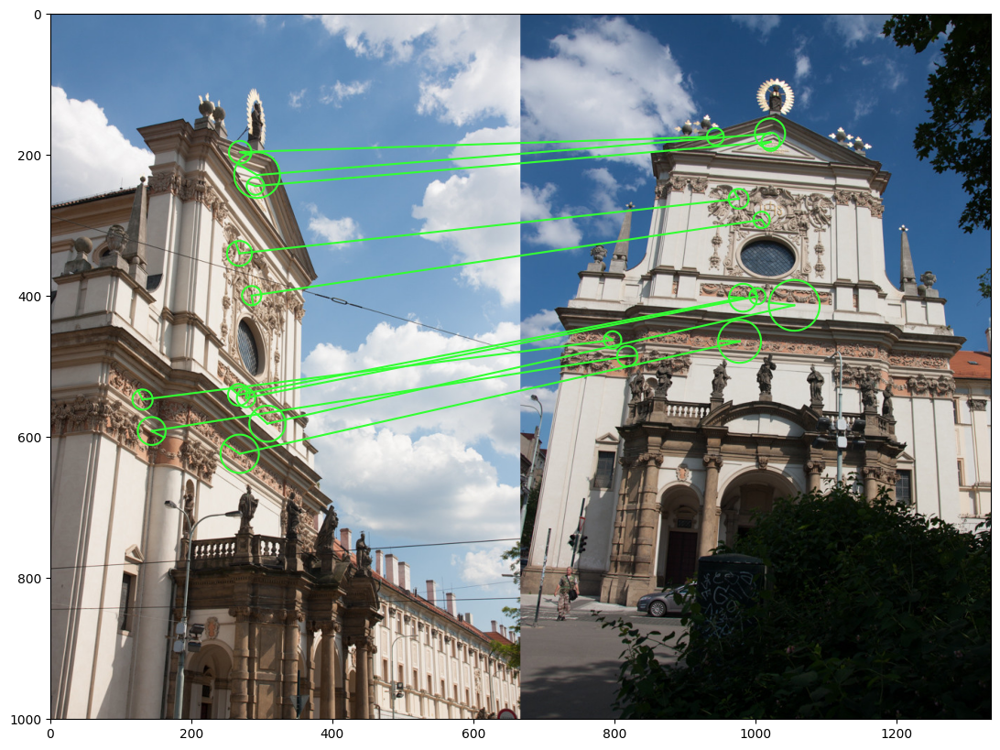
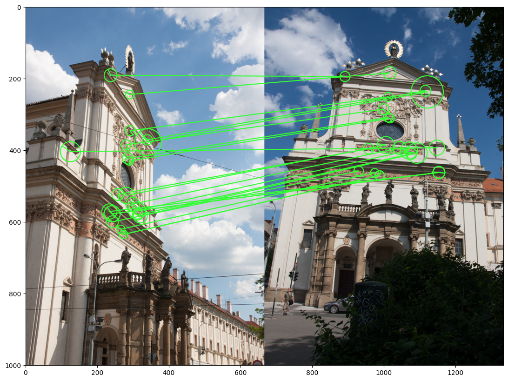
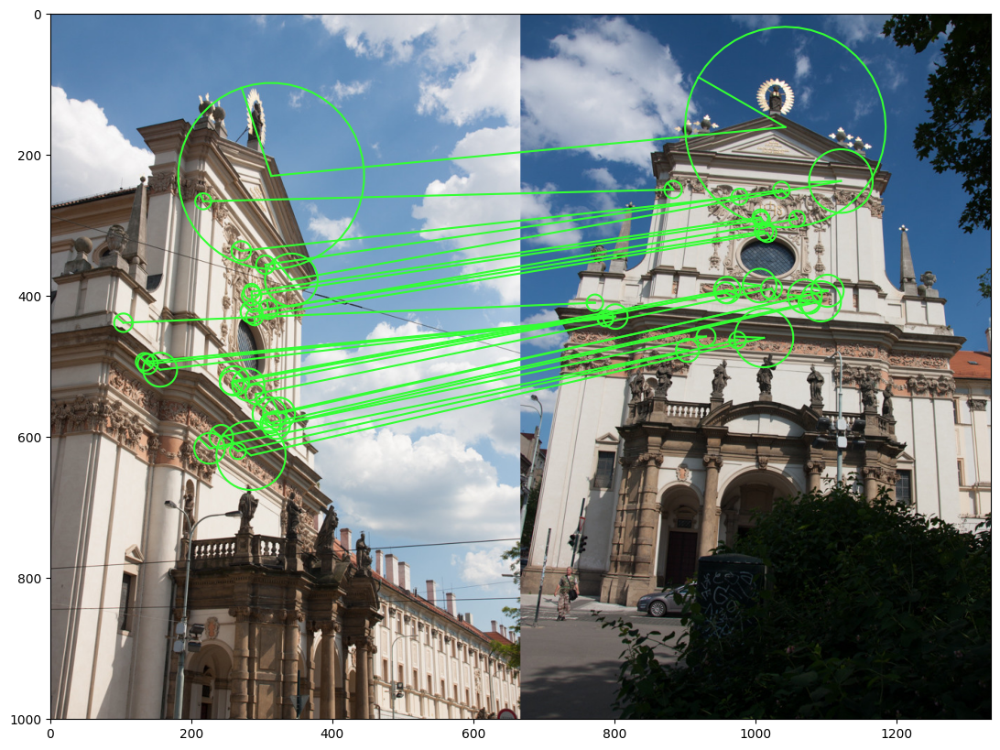
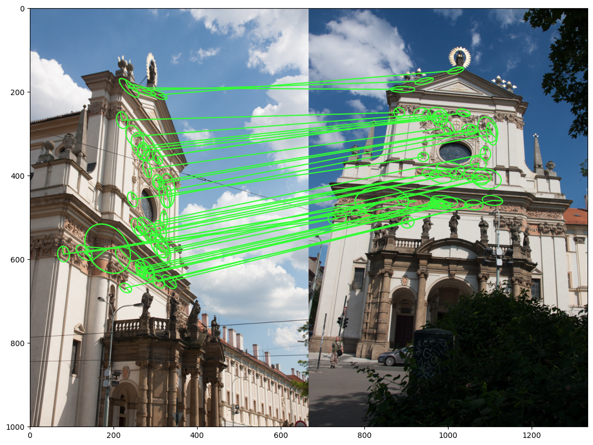
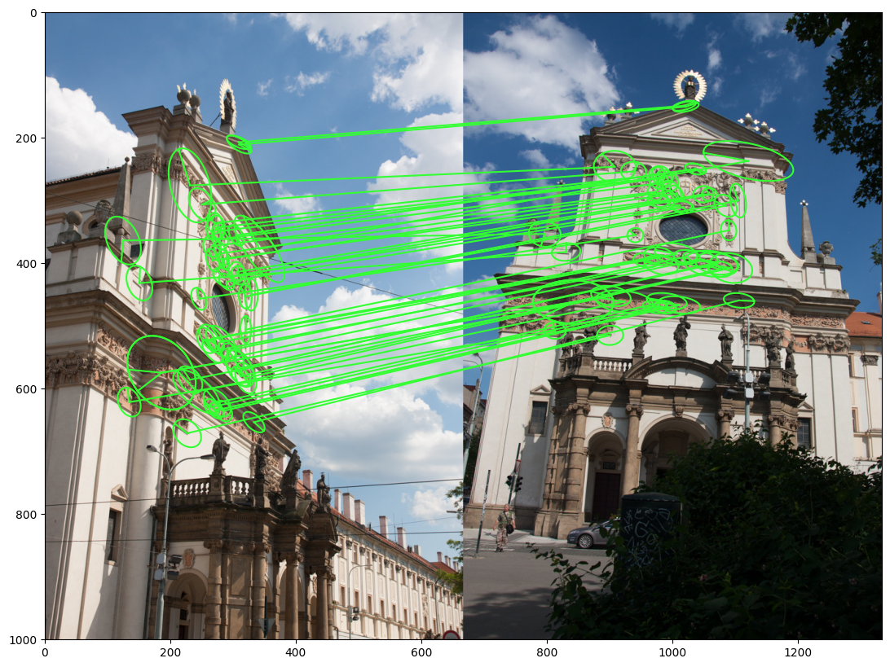
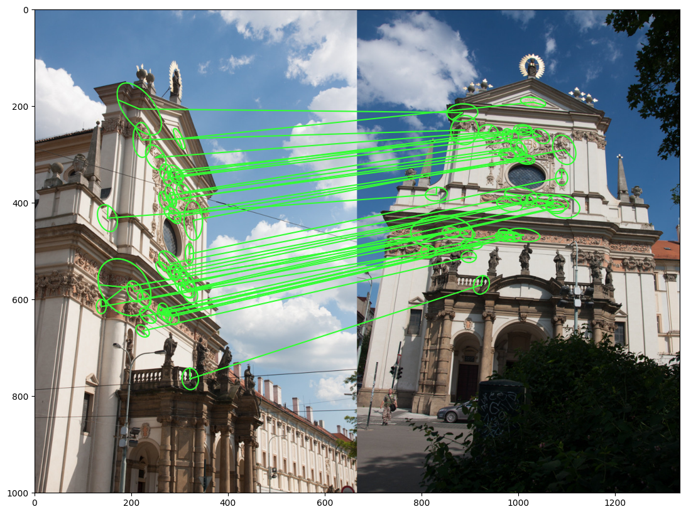

%%capture
!pip install kornia
!pip install kornia-rs
!pip install kornia_moons
!pip install opencv-python --upgradeImage matching example with kornia local features: TFeat, MKD, OriNet, HyNet and OpenCV detector
Intermediate
Local features
kornia.feature
In this tutorial we will show how we can perform image matching using kornia local features

It is possible to use OpenCV local features, such as SIFT with kornia via kornia_moons library.
First, we will install everything needed:
- fresh version of kornia for MKD and TFeat descriptors
- fresh version of OpenCV for SIFT features and MAGSAC++
- kornia_moons for the conversions between OpenCV and kornia formats
Now let’s download an image pair
import io
import requests
def download_image(url: str, filename: str = "") -> str:
filename = url.split("/")[-1] if len(filename) == 0 else filename
# Download
bytesio = io.BytesIO(requests.get(url).content)
# Save file
with open(filename, "wb") as outfile:
outfile.write(bytesio.getbuffer())
return filename
url_a = "https://github.com/kornia/data/raw/main/matching/kn_church-2.jpg"
url_b = "https://github.com/kornia/data/raw/main/matching/kn_church-8.jpg"
download_image(url_a)
download_image(url_b)'kn_church-8.jpg'First, we will define image matching pipeline with OpenCV SIFT features. We will also use kornia for the state-of-the-art match filtering – Lowe ratio + mutual nearest neighbor check.
Imports
import cv2
import kornia as K
import kornia.feature as KF
import matplotlib.pyplot as plt
import numpy as np
import torch
from kornia_moons.feature import *
from kornia_moons.viz import *Using OpenCV SIFT as is and converting it manually
def sift_matching(fname1, fname2):
img1 = cv2.cvtColor(cv2.imread(fname1), cv2.COLOR_BGR2RGB)
print(img1.shape)
img2 = cv2.cvtColor(cv2.imread(fname2), cv2.COLOR_BGR2RGB)
# OpenCV SIFT
sift = cv2.SIFT_create(8000)
kps1, descs1 = sift.detectAndCompute(img1, None)
kps2, descs2 = sift.detectAndCompute(img2, None)
# Converting to kornia for matching via AdaLAM
lafs1 = laf_from_opencv_SIFT_kpts(kps1)
lafs2 = laf_from_opencv_SIFT_kpts(kps2)
dists, idxs = KF.match_adalam(
torch.from_numpy(descs1), torch.from_numpy(descs2), lafs1, lafs2, hw1=img1.shape[:2], hw2=img2.shape[:2]
)
# Converting back to kornia via to use OpenCV MAGSAC++
tentatives = cv2_matches_from_kornia(dists, idxs)
src_pts = np.float32([kps1[m.queryIdx].pt for m in tentatives]).reshape(-1, 2)
dst_pts = np.float32([kps2[m.trainIdx].pt for m in tentatives]).reshape(-1, 2)
F, inliers_mask = cv2.findFundamentalMat(src_pts, dst_pts, cv2.USAC_MAGSAC, 0.25, 0.999, 100000)
# Drawing matches using kornia_moons
draw_LAF_matches(
lafs1,
lafs2,
idxs,
img1,
img2,
inliers_mask.astype(bool).reshape(-1),
draw_dict={"inlier_color": (0.2, 1, 0.2), "tentative_color": None, "feature_color": None, "vertical": False},
)
print(f"{inliers_mask.sum()} inliers found")
returnfname1 = "kn_church-2.jpg"
fname2 = "kn_church-8.jpg"
sift_matching(fname1, fname2)11 inliers found
Using OpenCV SIFT with kornia matcher
Now we need to define a function to feed the OpenCV keypoints into local descriptors from kornia. Luckily, that is easy with the help of kornia_moons.
def get_matching_kpts(lafs1, lafs2, idxs):
src_pts = KF.get_laf_center(lafs1).view(-1, 2)[idxs[:, 0]].detach().cpu().numpy()
dst_pts = KF.get_laf_center(lafs2).view(-1, 2)[idxs[:, 1]].detach().cpu().numpy()
return src_pts, dst_pts
def sift_korniadesc_matching(fname1, fname2, descriptor):
timg1 = K.io.load_image(fname1, K.io.ImageLoadType.RGB32)[None, ...] # BxCxHxW
timg2 = K.io.load_image(fname2, K.io.ImageLoadType.RGB32)[None, ...] # BxCxHxW
sift = OpenCVDetectorKornia(cv2.SIFT_create(8000))
local_feature = KF.LocalFeature(sift, KF.LAFDescriptor(descriptor))
lafs1, resps1, descs1 = local_feature(K.color.rgb_to_grayscale(timg1))
lafs2, resps2, descs2 = local_feature(K.color.rgb_to_grayscale(timg2))
dists, idxs = KF.match_adalam(descs1[0], descs2[0], lafs1, lafs2, hw1=timg1.shape[2:], hw2=timg2.shape[2:])
src_pts, dst_pts = get_matching_kpts(lafs1, lafs2, idxs)
F, inliers_mask = cv2.findFundamentalMat(src_pts, dst_pts, cv2.USAC_MAGSAC, 0.25, 0.999, 100000)
draw_LAF_matches(
lafs1,
lafs2,
idxs,
K.tensor_to_image(timg1),
K.tensor_to_image(timg2),
inliers_mask.astype(bool),
draw_dict={"inlier_color": (0.2, 1, 0.2), "tentative_color": None, "feature_color": None, "vertical": False},
)
print(f"{inliers_mask.sum()} inliers found")Now let’s try kornia new descriptors – MKD and TFeat. MKD is one of the best handcrafted local feature descriptors, presented in IJCV 2018 paper “Understanding and Improving Kernel Local Descriptors”.
mkd = KF.MKDDescriptor(32)
with torch.inference_mode():
sift_korniadesc_matching(fname1, fname2, mkd)12 inliers foundResult seems 2 inliers better than with SIFTs. Let’s try TFeat - lightweight deep learning-based descriptor from BMVC 2016 paper “Learning local feature descriptors with triplets and shallow convolutional neural networks”
tfeat = KF.TFeat(True)
with torch.inference_mode():
sift_korniadesc_matching(fname1, fname2, tfeat)22 inliers found
Good old HardNet
In the worst-case we can always fall back to the HardNet – more robust, but also slower than TFeat and MKD, descriptor
device = torch.device("cpu")
hardnet = KF.HardNet(True).eval()
with torch.inference_mode():
sift_korniadesc_matching(fname1, fname2, hardnet)26 inliers found
AffNet
We haven’t done yet! SIFT detector is a great tool, but we can improve it by using deep learned affine shape estimation – AffNet. You can do it, using a single function wrapper - OpenCVDetectorWithAffNetKornia.
def siftaffnet_korniadesc_matching(fname1, fname2, descriptor):
timg1 = K.io.load_image(fname1, K.io.ImageLoadType.RGB32)[None, ...] # BxCxHxW
timg2 = K.io.load_image(fname2, K.io.ImageLoadType.RGB32)[None, ...] # BxCxHxW
# Magic is here
sift = OpenCVDetectorWithAffNetKornia(cv2.SIFT_create(8000))
local_feature = KF.LocalFeature(sift, KF.LAFDescriptor(descriptor))
with torch.inference_mode():
lafs1, resps1, descs1 = local_feature(K.color.rgb_to_grayscale(timg1))
lafs2, resps2, descs2 = local_feature(K.color.rgb_to_grayscale(timg2))
dists, idxs = KF.match_adalam(descs1[0], descs2[0], lafs1, lafs2, hw1=timg1.shape[2:], hw2=timg2.shape[2:])
src_pts, dst_pts = get_matching_kpts(lafs1, lafs2, idxs)
F, inliers_mask = cv2.findFundamentalMat(src_pts, dst_pts, cv2.USAC_MAGSAC, 0.25, 0.999, 100000)
draw_LAF_matches(
lafs1,
lafs2,
idxs,
K.tensor_to_image(timg1),
K.tensor_to_image(timg2),
inliers_mask.astype(bool),
draw_dict={"inlier_color": (0.2, 1, 0.2), "tentative_color": None, "feature_color": None, "vertical": False},
)
print(f"{inliers_mask.sum()} inliers found")siftaffnet_korniadesc_matching(fname1, fname2, hardnet)39 inliers found
HyNet
siftaffnet_korniadesc_matching(fname1, fname2, KF.HyNet(True).eval())47 inliers found
SOSNet
siftaffnet_korniadesc_matching(fname1, fname2, KF.SOSNet(True).eval())48 inliers foundHardNet8
siftaffnet_korniadesc_matching(fname1, fname2, KF.HardNet8(True).eval())38 inliers found